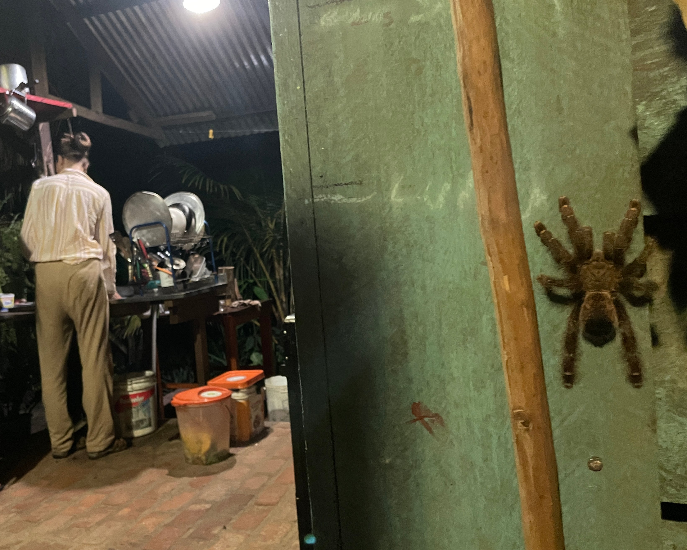
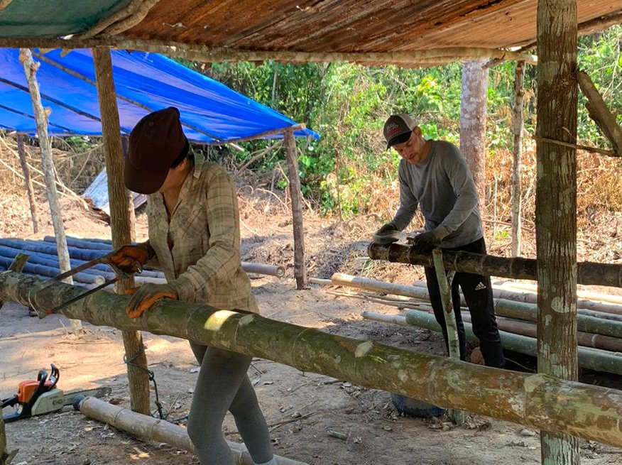

16
Florestania
On restoring the Amazon,
how “Can I help?” turned out wrong and
how cornstarch helped to survive.


Hello readers, the 14th blog already and how time flies. The first blog I wrote on my last days in Wageningen dates from over a year ago and I have now been travelling in beautiful South America for 5 months, while in the Netherlands my now one-year-old nephew Faas has started to take his first steps. Life as a digital nomad is an uncertain existence, but it gives me the opportunity to see more of the world besides work. In addition to the digital work, it is incredible what I have already seen, how many cities I have already visited, what distances I have covered and how many people I have met.
It may seem simple, you grab your laptop and go to work in an affordable country like Peru, but just starting here in South America, as you can read in this blog, took a lot of effort. A lot of energy went into learning two languages: programming and Spanish, which only now after 3 years have I finally noticed that I am really starting to master them. Being a programmer comes with its own challenges. While a teacher will often quickly receive recognition when he shares something about the day, it is often a challenge for a programmer to be understood, while a programmer is of course just as happy to talk about his passion. Where can I meet other digital nomads to discuss codes or share some travel frustrations? You would almost say that by 2023 there should be an app on which you can use a map to get in touch with digital nomads in your area. Not a villa with 15 digital nomads in Bali, but just something small. Or an old couple with some spare rooms, a desk and internet, where you can spend some time together. Such information would be invaluable, but at the moment it seems largely a pipe dream.
 While I was racking my brains about this, I decided to take a different tack and started workaway Florestania in Cobija Bolivia on September 20, 2023, where Ellen from Brazil and Nico from Bolivia, two people with hearts of gold, in 2016 on an impoverished part of the Amazon rainforest have started a beautiful reforestation project. They first achieve this reforestation by planting banana trees and cassava, so that the soil is broken up again and shade is created, so that other plants such as cocoa, mango, assai and avocado can also grow there again.
While I was racking my brains about this, I decided to take a different tack and started workaway Florestania in Cobija Bolivia on September 20, 2023, where Ellen from Brazil and Nico from Bolivia, two people with hearts of gold, in 2016 on an impoverished part of the Amazon rainforest have started a beautiful reforestation project. They first achieve this reforestation by planting banana trees and cassava, so that the soil is broken up again and shade is created, so that other plants such as cocoa, mango, assai and avocado can also grow there again.
My bed with mosquito net is on the roof of a jungle hut. A mosquito net that I close every evening, because all kinds of things live here. In the morning you knock off your shoes before putting them on, because in our hut there lives a nest of tarantula spiders that love sweaty shoes. Those spiders come out as soon as it gets dark and when I heard that they had been here for 5 years and nothing had ever happened to a volunteer, I was more reassured. Because the owners have such a heart for the earth and reuse all residual products, hardly anything is lost on the Florestania project. Excretion is reused, food waste goes to the compost heap for the vegetable garden, water is pumped from the ground and electricity comes from the solar panels. Most of what we eat comes from the vegetable garden or the immediate surroundings. Nico and Ellen, who set up Florestania, are both forced to do extra work in the nearest city of Cobija in addition to the project, which is a job in itself. Unfortunately, it is still not enough to finance the entire project.
 Workaway is a popular platform for cultural exchange where a volunteer has to work 4 hours a day 5 days a week in exchange for free accommodation and food. This volunteer experience was a great choice for me because I have been feeling a bit alone lately and this project allowed me to connect with other people and be active for several hours a day. In addition, it was an excellent opportunity to put my Spanish into practice and to save some money on living expenses. Sounds good, but is that possible as a digital nomad in the middle of the Amazon jungle? When I heard that there was only electricity and WiFi from 11 to 15, I thought, let's just give it a try, because pushing yourself to do your work in less time doesn't have to be a bad thing. Maybe even better because you have a better balance between physical, social and computer activities.
Workaway is a popular platform for cultural exchange where a volunteer has to work 4 hours a day 5 days a week in exchange for free accommodation and food. This volunteer experience was a great choice for me because I have been feeling a bit alone lately and this project allowed me to connect with other people and be active for several hours a day. In addition, it was an excellent opportunity to put my Spanish into practice and to save some money on living expenses. Sounds good, but is that possible as a digital nomad in the middle of the Amazon jungle? When I heard that there was only electricity and WiFi from 11 to 15, I thought, let's just give it a try, because pushing yourself to do your work in less time doesn't have to be a bad thing. Maybe even better because you have a better balance between physical, social and computer activities.
The first weeks were an immense shock. My life had changed in one fell swoop from the city to the heart of the jungle, from eating out to looking for food in nature, and from being on my own to being together for twenty-four hours. My fellow volunteers Chris from France and Gabrielle from Brazil both spoke fluent Spanish and already had a lot of experience in volunteering, while it was only my first time. The ladies had an eye for every detail of what needed to be done, while I was also of good will, but still couldn't quite figure it out. We were mainly busy scrubbing bamboo, which would eventually be used to build a new educational centre. Monks' work, because each bamboo had to be worked with very limited tools. But secretly it was also delicious. Because how long has it been since you just spent 4 hours working in nature? And in the meantime we could chat in Spanish about anything and everything, about something that was bothering us or listen together to an old dusty Spotify playlist that could use a refresh.
 When I had happily gotten through the first week, it turned out that a tough second week was ahead. First I got a bad fever and then because of the sweating I started to suffer from itching caused by small animals. Cornstarch helped to keep the skin dry and remove the bugs. These days so many friends, family and students came to visit the project that the days became almost full. An afternoon could easily be spent making mango jam or basil pesto, or on the weekly cleaning of the jungle hut, so there was less time for my digital work. I then set the alarm for 5:00 in the morning so that I could quickly get an hour of programming done before scrubbing the bamboo. Crazy when I think back about it. In addition, due to the cloud cover, the solar panels had not generated enough power, so on an already busy day I had to walk to the nearest village to charge my laptop in a noisy shop with stray dogs.
When I had happily gotten through the first week, it turned out that a tough second week was ahead. First I got a bad fever and then because of the sweating I started to suffer from itching caused by small animals. Cornstarch helped to keep the skin dry and remove the bugs. These days so many friends, family and students came to visit the project that the days became almost full. An afternoon could easily be spent making mango jam or basil pesto, or on the weekly cleaning of the jungle hut, so there was less time for my digital work. I then set the alarm for 5:00 in the morning so that I could quickly get an hour of programming done before scrubbing the bamboo. Crazy when I think back about it. In addition, due to the cloud cover, the solar panels had not generated enough power, so on an already busy day I had to walk to the nearest village to charge my laptop in a noisy shop with stray dogs.
 It all seemed a bit too much, not only for me, but also for the owner. I think this made her a little less patient, because as soon as I asked something, such as about charging my laptop via the solar panel battery, I received a fierce response and she indicated that she had already explained it many times. Now I don't think it's easy to have to explain the same thing to new volunteers all the time, especially when they are still learning the language. During a conversation about it, she also indicated that she felt that I regularly interrupted her and that there is a macho culture here in South America in which many women are regularly interrupted when they have something to say. Terrible to hear, of course, and very important that we as men are aware of this, because I obviously did not mean it that way. It was not nice to hear, while you are already struggling with your first workaway, trying to start a conversation about it, that you are then compared to interrupting 'machos'.
It all seemed a bit too much, not only for me, but also for the owner. I think this made her a little less patient, because as soon as I asked something, such as about charging my laptop via the solar panel battery, I received a fierce response and she indicated that she had already explained it many times. Now I don't think it's easy to have to explain the same thing to new volunteers all the time, especially when they are still learning the language. During a conversation about it, she also indicated that she felt that I regularly interrupted her and that there is a macho culture here in South America in which many women are regularly interrupted when they have something to say. Terrible to hear, of course, and very important that we as men are aware of this, because I obviously did not mean it that way. It was not nice to hear, while you are already struggling with your first workaway, trying to start a conversation about it, that you are then compared to interrupting 'machos'.
 The conversation may not have gone exactly as expected, but things continued to improve over the next few days. When the Brazilian lady left, who was very nice by the way, the dynamic changed because there was more room for me to pick up things. I had a good connection with volunteer Chris from France, who is active with Extinction Rebellion and who fortunately understood me well. A programmer and someone from Extinction Rebellion. So you see, even that can match. She always took the time to explain things to me in peace. About how traditionally women often take on many household tasks and that sometimes, in addition to the well-intentioned question "Can I help with anything?", it is also nice if you instead look at what needs to be done and then take the initiative yourself. She really helped a lot to get a feel for very simple everyday things. We accidentally broke a plate and she suggested we get a new one for the family. I started keeping track of how people there make dishes like Shakshouka, preparing beans and baking Arepa cookies, which felt satisfying to prepare food in the same way.
The conversation may not have gone exactly as expected, but things continued to improve over the next few days. When the Brazilian lady left, who was very nice by the way, the dynamic changed because there was more room for me to pick up things. I had a good connection with volunteer Chris from France, who is active with Extinction Rebellion and who fortunately understood me well. A programmer and someone from Extinction Rebellion. So you see, even that can match. She always took the time to explain things to me in peace. About how traditionally women often take on many household tasks and that sometimes, in addition to the well-intentioned question "Can I help with anything?", it is also nice if you instead look at what needs to be done and then take the initiative yourself. She really helped a lot to get a feel for very simple everyday things. We accidentally broke a plate and she suggested we get a new one for the family. I started keeping track of how people there make dishes like Shakshouka, preparing beans and baking Arepa cookies, which felt satisfying to prepare food in the same way.
 Sustainability is currently a hot theme in the Netherlands. Actually, this would be a fantastic experience for every Dutch person. Living for a month on the simplest farm. You can tell everyone that we should conserve water and food for climate change and our descendants, but you only really learn this if you have to put in the effort. Because I had to do the laundry by stomping my feet in a bucket of water, it took a lot of time and I became much more critical about whether it was really necessary to wash clothes. The sink drain drained into a bucket of water that had to be emptied a little further away near an avocado tree, which automatically made you pay much more attention to the amount of water you let flush. They had a biological solution for everything. If there were too many mosquitoes, a piece of an egg carton was lit for smoke. And the pit of the avocado was placed on the guacamole so that it lasted longer. And when the moon was full, sowing was done to make the water more attractive to grow. The fact that I now continue my journey with a small container of washing powder in my bag shows that I have also learned something from it. Not that I'm never going to have my laundry done at the laundrette again, but doing it myself every now and then doesn't hurt either.
Sustainability is currently a hot theme in the Netherlands. Actually, this would be a fantastic experience for every Dutch person. Living for a month on the simplest farm. You can tell everyone that we should conserve water and food for climate change and our descendants, but you only really learn this if you have to put in the effort. Because I had to do the laundry by stomping my feet in a bucket of water, it took a lot of time and I became much more critical about whether it was really necessary to wash clothes. The sink drain drained into a bucket of water that had to be emptied a little further away near an avocado tree, which automatically made you pay much more attention to the amount of water you let flush. They had a biological solution for everything. If there were too many mosquitoes, a piece of an egg carton was lit for smoke. And the pit of the avocado was placed on the guacamole so that it lasted longer. And when the moon was full, sowing was done to make the water more attractive to grow. The fact that I now continue my journey with a small container of washing powder in my bag shows that I have also learned something from it. Not that I'm never going to have my laundry done at the laundrette again, but doing it myself every now and then doesn't hurt either.
 At the table we talked about everything that is going on in the world. About President Trump who has a bad image but who has actually fought relatively few wars compared to Presidents Obama and Biden. About modern slavery that is still going on in several major countries. Or why it is good for the Amazon if you buy the Brazilian nut in Europe. I helped set up a Florestania website, and I gave a presentation about my work and my passion for object recognition. Immediately afterwards, Nico said, 'This is a gap in the market, because it allows us to automatically recognize how many nuts our trees will produce'.
At the table we talked about everything that is going on in the world. About President Trump who has a bad image but who has actually fought relatively few wars compared to Presidents Obama and Biden. About modern slavery that is still going on in several major countries. Or why it is good for the Amazon if you buy the Brazilian nut in Europe. I helped set up a Florestania website, and I gave a presentation about my work and my passion for object recognition. Immediately afterwards, Nico said, 'This is a gap in the market, because it allows us to automatically recognize how many nuts our trees will produce'.
The owners of the workaway and I grew closer and closer, and in recent days I was even sad that the departure was imminent. This first volunteer experience did not go completely smoothly, but I was still proud that we still managed to create something beautiful together. I even ended up staying 10 days longer than planned, which was really nice because I already knew how everything was going and I could help new workawayers who were about to start. It's like going through the entire primary school in one month. And the best part of all was that when I left, I had experienced so much that I had a lot of new energy to travel again, to sit alone in an Airbnb and to meet people in hostels again.